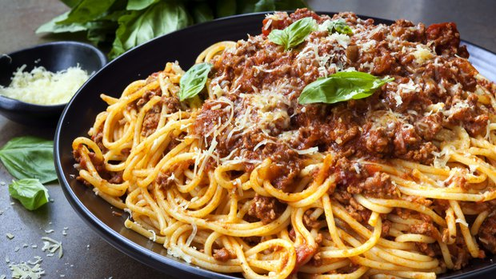

Let me introduce you to one of our favorite recipes that we share in our family. No one knows the origin of the recipe, but it comes from my girlfriend's side of the family. This recipe has been shared for generations and over time has become a masterpiece. So first, let me explain the name. The name comes from Bohemia. The equivalent in English is the word "yummy". And believe me, it's "yummy" and I wouldn't be mad if my partner cooked it all the time. Because you can never have enough. It's simple and easy to prepare and I'll walk you through step by step. So it's a creamy corn sauce that is served with jasmine rice, colorful flat noodles or any kind of pasta you have right now at home. If you are ready let see what you need to buy for this recipe.
Before we start preparing the dish. Wash your hands with soap. Prepare all the necessary ingredients on the kitchen counter. Wash the leeks, broccoli under a stream of water. Do the same with the meat. Finely chop the leeks. Divide the broccoli into smaller broccoli florets. Peel and finely chop the onion. Peel the garlic and cut into fine slices. Cut the meat into cubes - noodles. Meanwhile, prepare the jasmine rice in a rice cooker. If you don't have a rice cooker, order it from your nearest branch with an electric one (it's definitely worth it). Heat the olive oil in a pan and fry the onions until the onions turn golden. Add the garlic slices and sauté for a minute. Then the chicken. Sauté for about 5 minutes and add the leeks and broccoli. Cover with a lid and let fry for 5 minutes. Be careful not to burn anything, we have to stir, or reduce the flame to a lower degree. Add the corn - let simmer for a minute and add the cream. Lower the heat if you haven't done so and let it simmer for at least 5 minutes. Season with salt and pepper or other herbs.